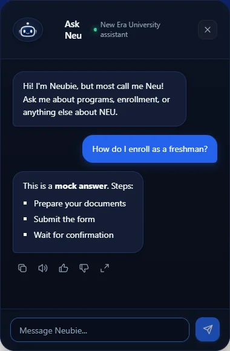

Cloud architecture · Team capstone · In development
Neubie University RAG Chatbot
Building a document-grounded university assistant.

The problem
University questions need answers grounded in source documents. A general-purpose model can produce plausible responses without knowing the university’s actual processes.
My contribution
I built document upload and ingestion workflows, vector retrieval and response generation, an embeddable chat widget, and an admin interface for managing indexed documents. This is a team capstone, with a public team repository linked below.
Technical decision
The ingestion pipeline separates document processing from chat requests. Documents are extracted, split into overlapping chunks, embedded with Cohere and indexed in S3 Vectors. A query retrieves relevant context before Amazon Bedrock generates a response. Lambda and API Gateway connect the serverless workflow.
Challenge and validation
The document pipeline and widget need independent checks: a working interface alone does not establish retrieval quality. Local API tests use mocked AWS services. The widget preview below was captured locally in mock mode; it verifies interface behavior, not live AWS retrieval or answer accuracy.
Current status
Testing uses mock university documents. The separate defense demo API is prepared, with deployment pending. Retrieval evaluation and production readiness remain ongoing.
Widget preview

The public repository snapshot may differ from the latest local work.